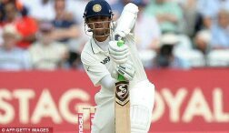
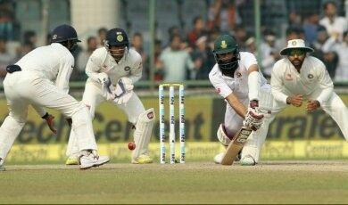

ENDURANCE
-November 21, 2017
It's completely a personal opinion, but to me, the real ‘test’ lies in struggling through the hard times. Sticking to the pitch, fighting for a day to end.
Sure, those beautiful cover drives and outswings are a sight to behold.
But playing on a pitch where the ball easily carries to the bat doesn't really 'test’ you. It's always about having the patience and striking when the opportunity comes. It's not the graceful shots, but the long, boring, strenuous hours which make test cricket a test.
I have always looked up to the likes of him…

And him…

You have to have such kind of eyes to see the beauty of test cricket. You have to be a cricket intellect, a true cricket lover.
Why is Test cricket special?
Because it is an event of a red ball making love with a 22 yard's deteriorating piece of soil and 22 players dancing around it for 5 days.
Unlike in ODIs, you can defend losing in Tests just by patience, concentration and determination. Sometimes, just sticking around and not giving up is all you need.
Test cricket has everything. It has good days, bad days, days on which not a single ball is played and days when anyone who can stand up, can be a hero. Doesn't matter if you're an opener or a tail-ender, a seamer or just an excellent fielder.
Test cricket has taught me a lot, but most importantly,